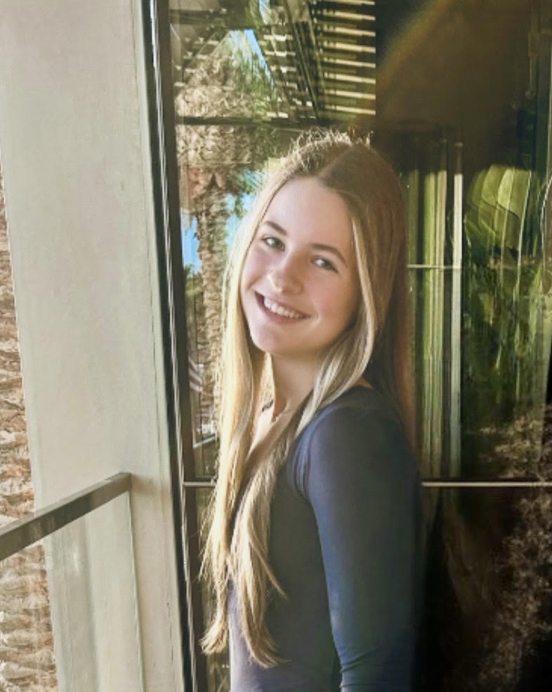

Profile PhotoRising Junior at Stanford Online High School with a passion for finance/economics. Interested in combining data-driven thinking, problem solving, and leadership to create a meaningful impact.
I have a strong academic interest in finance, investing, and the ways quantitative analysis and design intersect through data modeling. As I continue my education, I hope to deepen my understanding of economics in future college studies and explore how financial systems shape businesses, communities, and global markets.
Most importantly, I am driven by curiosity and a passion for learning. I approach every experience with a willingness to improve, seeking opportunities that challenge me to grow as both a student and a leader.
For academic opportunities, collaborations, or professional connections: